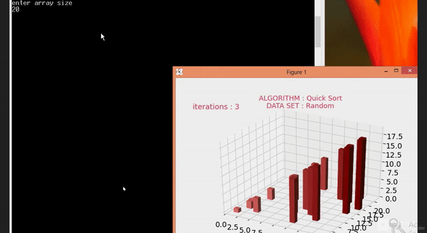

3D Visualisation of Sorting using Matplotlib
Author - Neelima Mohanty
30/01/2022 | 10:30 PM
Note 1:This Tutorial was first written using reStructuredText and then converted to HTML
Note 2:The terms with * are explained in the Refference table
Matplotlib is a plotting library for the Python programming language and its numerical mathematics extension NumPy. A Sorting Algorithm is used to rearrange a given array or list elements according to a comparison operator on the elements. The comparison operator is used to decide the new order of element in the respective data structure.
Through this tutorial we will see the 3D Visualizations of Quick Sort*.
Prerequisites
Before following this tutorial, you need the following:
• Familiarity with Python language.
• Python Software and matplolib library.
3D Visualisation of Quick Sort
Approach:
1.We will generate an array* with random elements.
2.The algorithm will be called on that array and yield statement will be used instead of return statement for visualization purposes.
3.We will yield the current states of the array after comparing and swapping. Hence, the algorithm will return a generator object.
4.Matplotlib animation will be used to visualize the comparing and swapping of the array.
5.We will then plot the graph, which will return an object of Poly3dCollection* using which further animation will be done.
Implementation
Create a file named main.py and type the following code:
# importing all required modules
import matplotlib.pyplot as plt
from matplotlib.animation import FuncAnimation
from mpl_toolkits.mplot3d import axes3d
import matplotlib as mp
import numpy as np
import random
# quicksort function
def quicksort(a, l, r):
if l>=r:
return
x=a[l]
j=l
for i in range(l+1, r+1):
if a[i]<=x:
j+=1
a[j], a[i] = a[i], a[j]
yield a
a[l], a[j]=a[j], a[l]
yield a
# yield from statement used to yield
# the array after dividing
yield from quicksort(a, l, j-1)
yield from quicksort(a, j+1, r)
# function to plot bars
def showGraph():
# for random unique values
n=int(input("enter array size\n"))
a=[i for i in range(1, n+1)]
random.shuffle(a)
datasetName='Random'
# generator object returned
# by the function
generator = quicksort(a, 0, n-1)
algoName='Quick Sort'
# style of the chart
plt.style.use('fivethirtyeight')
# set colors of the bars
data_normalizer = mp.colors.Normalize()
color_map = mp.colors.LinearSegmentedColormap(
"my_map",
{
"red": [(0, 1.0, 1.0),
(1.0, .5, .5)],
"green": [(0, 0.5, 0.5),
(1.0, 0, 0)],
"blue": [(0, 0.50, 0.5),
(1.0, 0, 0)]
}
)
fig = plt.figure()
ax = fig.add_subplot(projection='3d')
# z values and positions of the bars
z = np.zeros(n)
dx = np.ones(n)
dy = np.ones(n)
dz = [i for i in range(len(a))]
# Poly3dCollection returned
# into variable rects
rects = ax.bar3d(range(len(a)), a, z, dx,
dy, dz,
color = color_map(data_normalizer(range(n))))
# setting and x and y limits
# equal to the length of the array
ax.set_xlim(0, len(a))
ax.set_ylim(0, int(1.1*len(a)))
ax.set_title("ALGORITHM : "+algoName+"\n"+"DATA SET : "+datasetName,
fontdict={'fontsize': 13, 'fontweight': 'medium',
'color' : '#E4365D'})
# text to plot on the chart
text = ax.text2D(0.1,0.95, "", horizontalalignment = 'center',
verticalalignment = 'center',
transform=ax.transAxes,
color = "#E4365D")
iteration = [0]
# animation function to be
# repeatedly called
def animate(A, rects, iteration):
# to clear the bars from
# the Poly3DCollection object
ax.collections.clear()
ax.bar3d(range(len(a)), A, z, dx,
dy, dz,
color = color_map(data_normalizer(range(n))))
iteration[0] += 1
text.set_text("iterations : {}".format(iteration[0]))
# animate function is called here
# and the generator object is passed
anim = FuncAnimation(fig, func=animate,
fargs = (rects, iteration),
frames = generator, interval=50,
repeat=False)
# show the plot
plt.show()
# function call
showGraph()
Conclusion
Output:
For array size 20

Refference
| Term used |
Description |
| Quick Sort |
Quicksort is the widely used sorting algorithm that makes n log n comparisons in average case for sorting an array of n elements. It is a faster and highly efficient sorting algorithm |
| Array |
List of elements |
| Poly3dCollection |
A collection of 3D polygons |
Happy Learning!